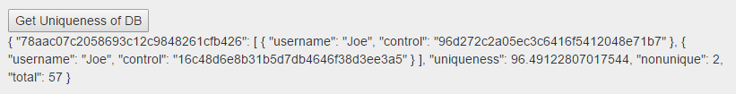

Example Study
A study was run on 25+ control users. A control user for our example study
is defined as any user with our Control Plugin, or a WordPress login.
Fingerprints were collected, and the analysis scripts were run.
A total of 85 fingerprints were collected during this validation exercise. Along with
verification of our tool's functionality, the example study provides data that supports
the statement that browser fingerprints can be used to authenticate users logging into
a web page or application.
Our example study provides the following results: Out of 56
different named fingerprints, there were only 2 browser fingerprints that were not unique.
Results from database:

These two fingerprints were actually the same user, but this user had installed, and reinstalled
the control plugin, therefore providing himself with two distinct control IDs. Therefore, this serves
as verification of the uniqueness script functionality, but does not imply that fingerprint uniqueness
is not a valid form of authentication.
This sample size is not large enough to definitively state that
fingerprints can be used as a standalone method for authentication,
but it does serve as motivation for larger experiments to be run
using this tool. Along with fingerprint uniqueness, locational and temporal
anomalies with respect to web page accesses of a user can be used to flag
an access as potentially fraudulent. Finally, collecting a lot of information
about the types of browsers users of a web application utilize can provide insight
into the type of browsers that web pages should be catering to, and the
types of browsers used by different types of users.
Resources
IEEE Spectrum
Online advertisers collaborate with websites to gather your browsing data, eventually building up a detailed profile of your interests and activities. These browsing profiles can be so specific that they allow advertisers to target...
EFF.org
Abstract. We investigate the degree to which modern web browsers are subject to device Fingerprinting via the version and configuration information that they will transmit to websites upon request...